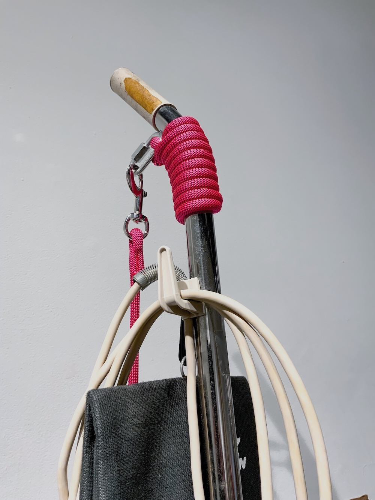
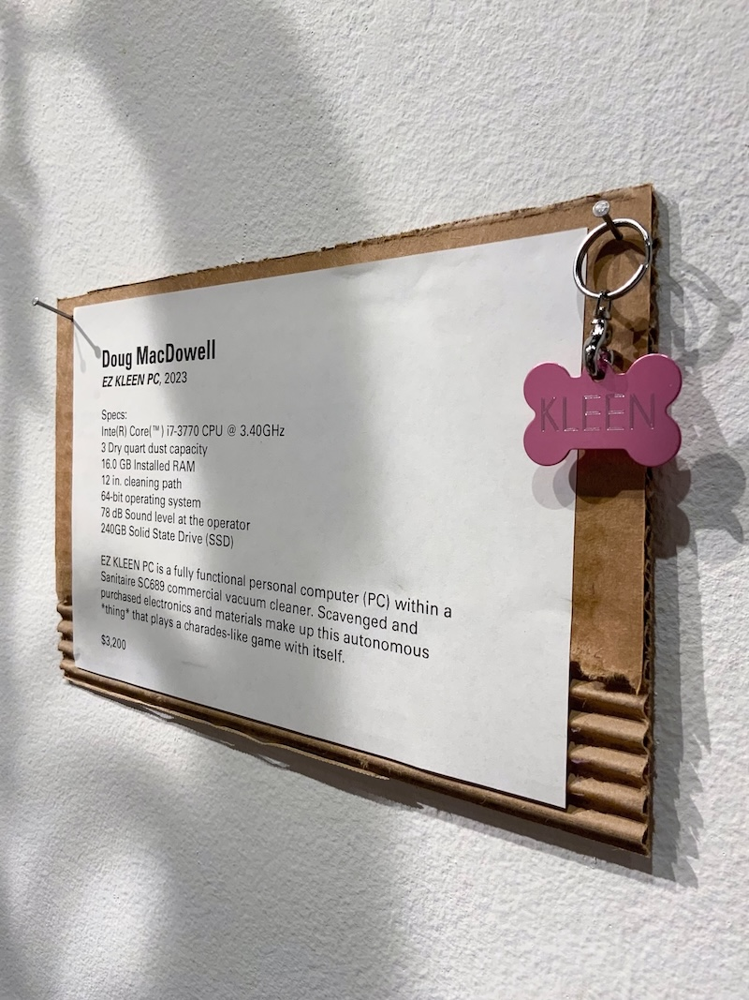
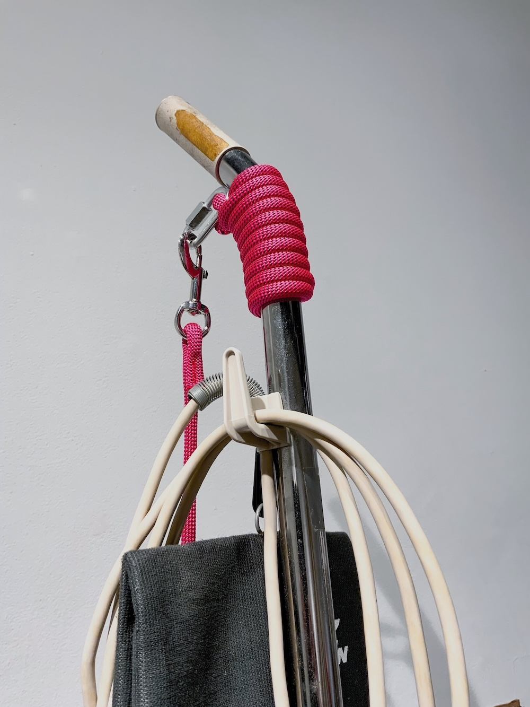
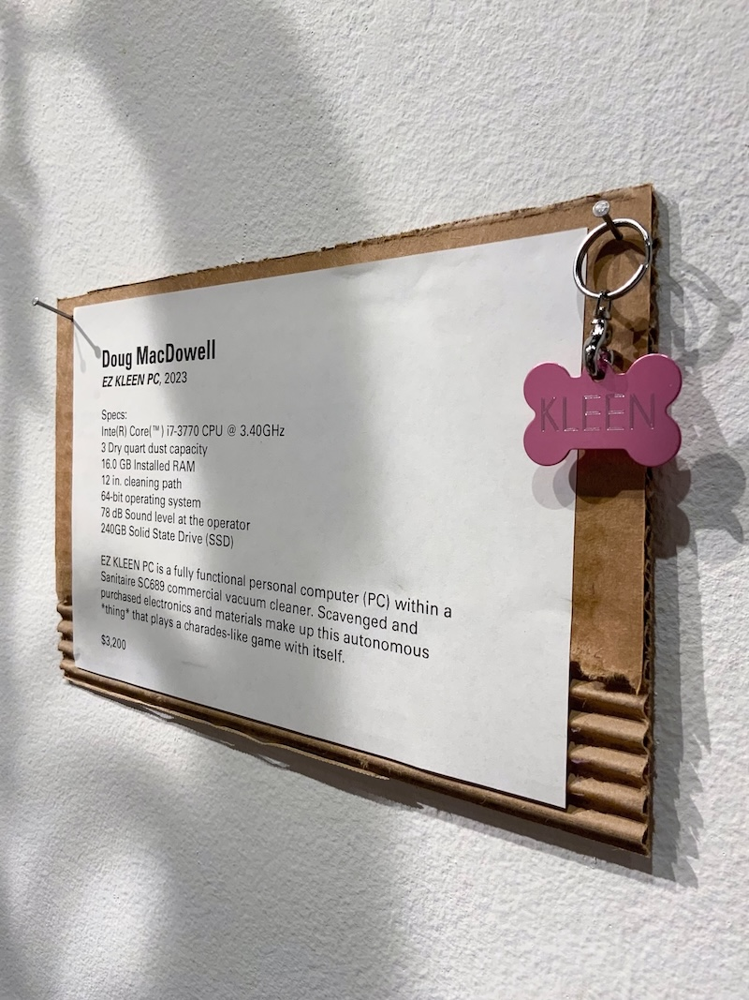

EZ KLEEN PC
A vacuum cleaner computer by Doug MacDowell artist
Description: EZ KLEEN is a fully functional computer
integrated with a Sanitaire SC869 commercial vaccum cleaner. This build utilizes the vacuum cleaner's
plastic dust collecting bin by converting it into a liquid cooling reservoir. Pumps circulate a green
fluid (windshield wiper fluid...) throughout the system. Two, 1-inch OLED display modules are attached
to the front of the vacuum cleaner, and one larger display on the hood. The displays generate images and text,
making the machine look like it's
playing a charades like game with itself. Specifications of the machine are listed below and you can
check out a
7-hour Twitch stream of me building EZ KLEEN. EZ KLEEN PC was featured in two group art exhibitions, but has since been dismantled and it's parts repurposed.
Specifications:
- Inte(R) Core(™) i7-3770 CPU @ 3.40GHz
- 3 Dry quart dust capacity
- 16.0 GB Installed RAM
- 12" cleaning path
- 64-bit operating system
- 78 dB Sound level at the operator
- 240GB Solid State Drive (SSD)
 


